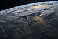

troposphere

Definition: The troposphere is the lowest layer of the atmosphere of Earth. It contains 75% of the total mass of the planetary atmosphere and 99% of the total mass of water vapor and aerosols, and is where most weather phenomena occur. From the planetary surface of the Earth, the average height of the troposphere is 18 km (11 mi; 59,000 ft) in the tropics; 17 km (11 mi; 56,000 ft) in the middle latitudes; and 6 km (3.7 mi; 20,000 ft) in the high latitudes of the polar regions in winter; thus the average height of the troposphere is 13 km (8.1 mi; 43,000 ft).
Source: Wikipedia
Wikipedia Page
Wikidata Page